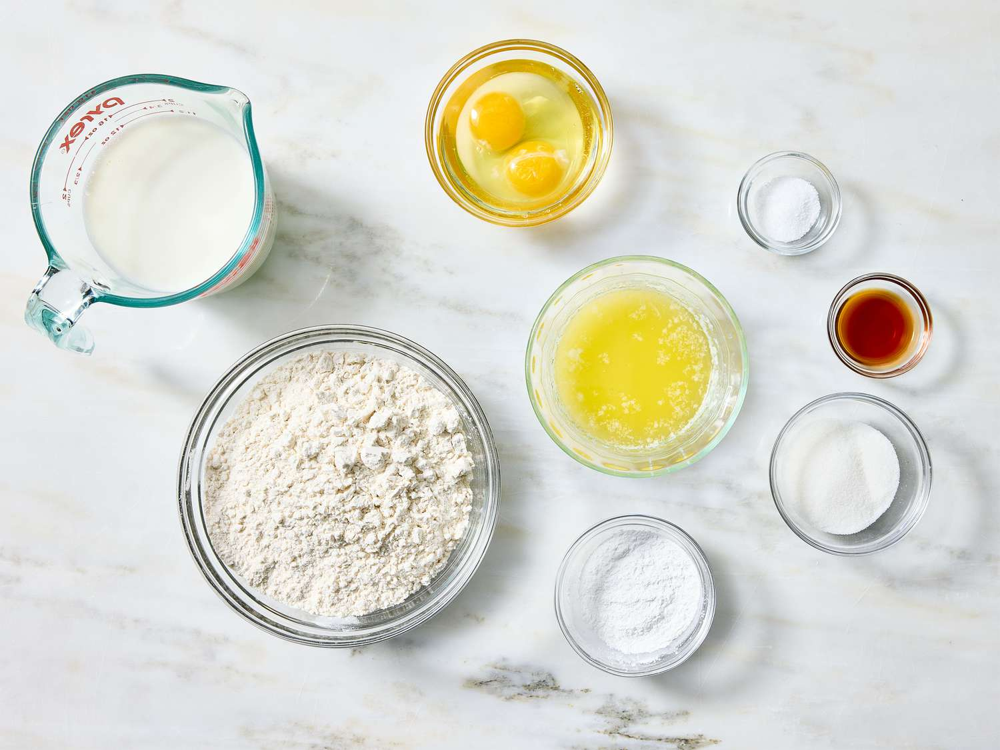
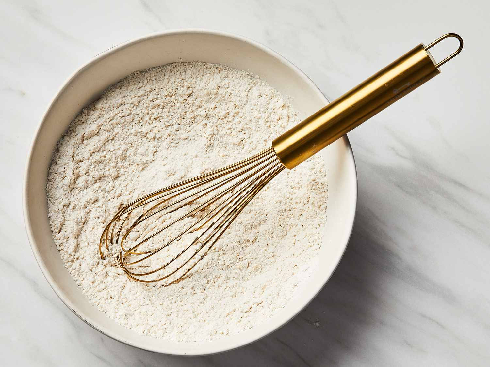
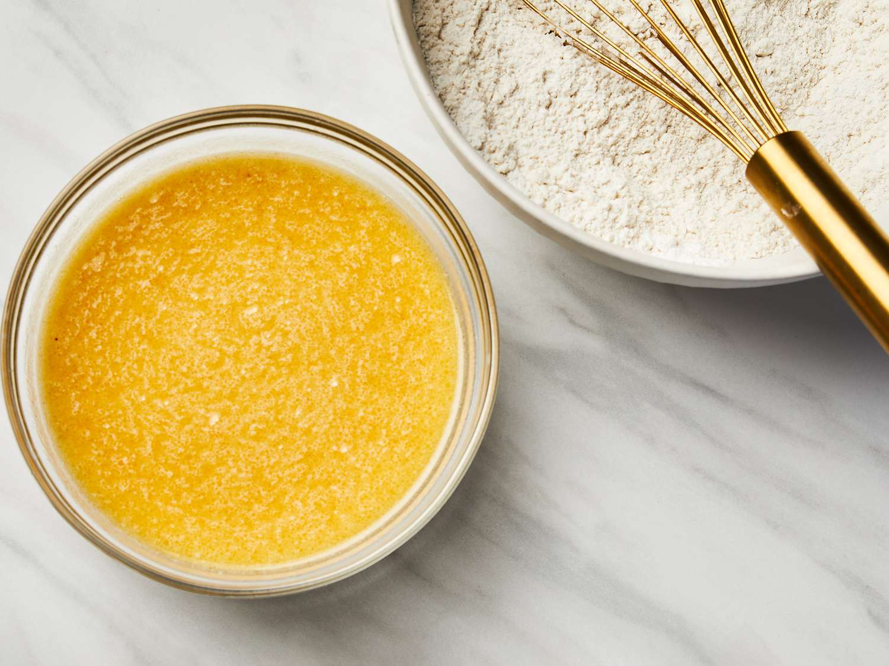
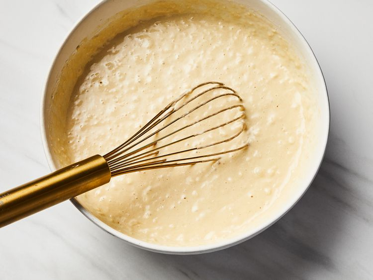
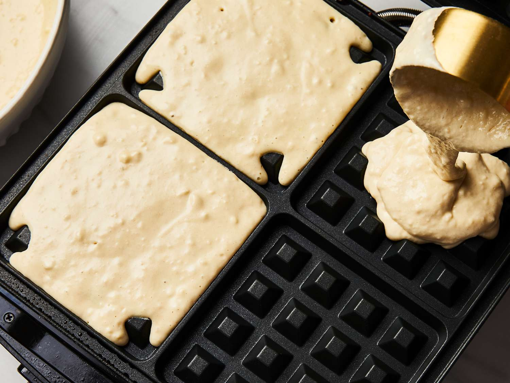
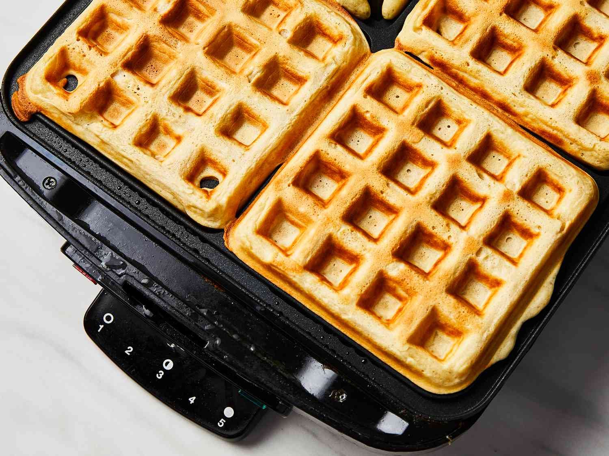

Classic Waffles

These waffles turn out lovely and crispy. Perfect for any day of the week!
Prep Time:
10 mins
Cook Time:
15 mins
Total Time:
25 mins
Servings:
5
Ingredients
- 2 cups all-purpose flour
- 1 teaspoon salt or to taste
- 4 teaspoons baking powder
- 2 tablespoons white sugar
- 2 large eggs
- 1 ½ cups warm milk
- ⅓ cup butter, melted
- 1 teaspoon vanilla extract
Directions
Step 1
Gather all ingredients.

Step 2
Mix flour, salt, baking powder, and sugar together in a large bowl; set aside. Preheat waffle iron to desired temperature.

Step 3
Beat eggs in a separate bowl; stir in milk, butter, and vanilla.

Step 4
Pour milk mixture into flour mixture; beat until blended.

Step 5
Ladle batter into a preheated waffle iron.

Step 6
Cook waffles until golden and crisp.

Step 7
Serve immediately and enjoy!

Nutrition Facts (per serving)
379
Calories
16g
Fat
48g
Carbs
10g
Protein